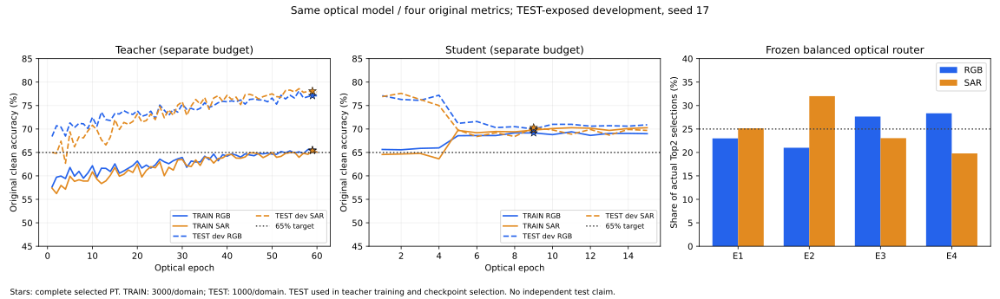

四项均为固定完整原图、各域无权重统计。每轮混合原TRAIN6000和原TEST2000，四组损失分别平均后侧重较弱组。教师可用已授权TEST硬标签；学生TEST只用教师软目标，继承权重已暴露TEST。VAL只记录，不设门槛。不是独立泛化结果。
冻结已经核验的原光router，保持四专家实际选择负载；训练原E/G与同一个Linear。教师最多60轮、学生最多15轮，父E0参与。17项CPU检查及精确父40张真实输入GPU更新、学生TEST硬GT拒绝、头拟合相位冻结均通过。样本准入不是准确率保证。
| 阶段 | 状态／完成轮／选中轮 | TRAIN RGB | TRAIN SAR | TEST RGB | TEST SAR | 四项最低 |
|---|---|---|---|---|---|---|
| teacher | complete / 完成E60 / 选中E59 | 65.50% | 65.40% | 77.10% | 78.10% | 65.40% |
| student | complete / 完成E15 / 选中E9 | 69.17% | 69.77% | 70.00% | 70.30% | 69.17% |
本轮已完成，表中为每阶段选中PT的完整原图成绩。新的学生PT满足四项条件，旧77.6/71.8但低TRAIN的权重仍完整保留。
完整原图与同PT核验：四项65%已达。best/last、三split原ID/标签/域、实际Top2、完整canonical重放、原router冻结和教师8000目标回放已核；自己GPU分配已释放。
学生PT SHA a3fa43923e4640246aa7e715703cb0242aa3b434f0b2f7ae181d0cd5a2663247
教师与学生独立预算轴，TEST已用于开发选模，不当独立测试。
